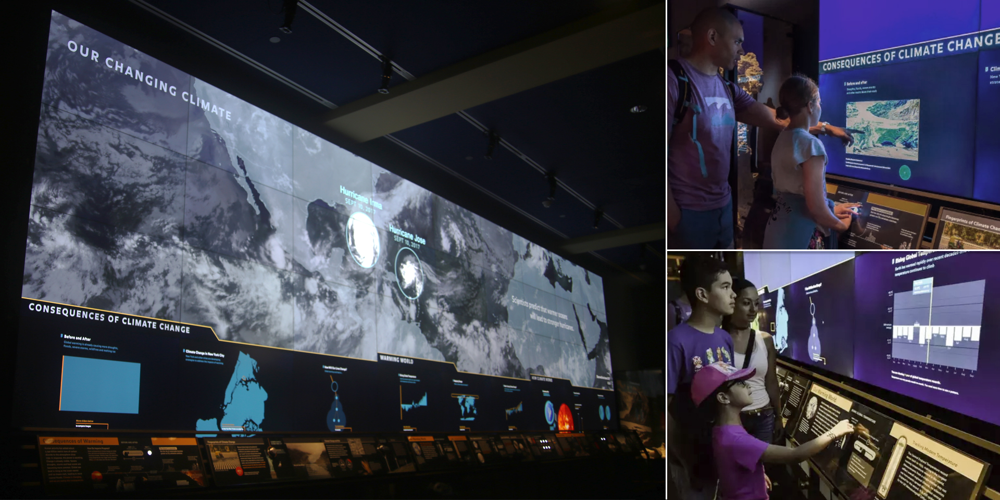

This is an online representation of the "What Causes Climate and Climate Change?" exhibit in the American Museum of Natural History's Hall of Planet Earth for educators, guides, and explainers to use outside of the museum. Click, drag, and use your mousewheel to pan and zoom the exhibit or click on specific screens to view and try the interactives.
The screen above is a representation of a 36-foot wide matrix of 36 high definition screens. The bottom row of screens is interactive and controlled by physical controls (sliders, knobs, and buttons) embedded in the label deck. For context, this online version attempts to retain those controls even though on-screen controls may not be the ideal way to interact with them on a personal device.

© AMNH/D. Finnin
For more information about the content, please visit the Museum's Hall of Planet Earth web page
The underlying code for all the interactive apps are open-source and available publicly on the web.
Land-Ocean Temperature Index, ERSSTv5, 1200km smoothing, NASA GISS
CMIP5 GISS-E2 Global Radiative Forcings (Fi) Miller et al (2014), NASA GISS
OSCAR third degree resolution ocean surface currents, NASA JPL PODACC
Sea surface temperature (AQUA/MODIS), NASA Earth Observations, GSFC